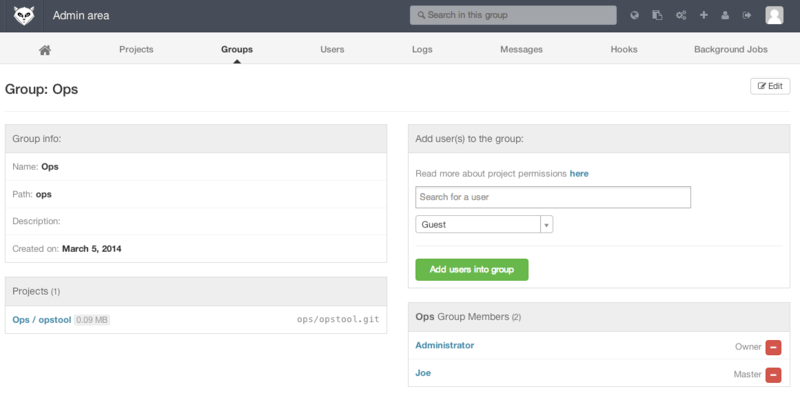

=== GitLab
虽然 GitWeb 相当简单。 但如果你正在寻找一个更现代，功能更全的 Git 服务器，这里有几个开源的解决方案可供你选择安装。 因为 GitLab 是其中最出名的一个，我们将它作为示例并讨论它的安装和使用。 这比 GitWeb 要复杂的多并且需要更多的维护，但它的确是一个功能更全的选择。
安装
GitLab 是一个数据库支持的 web 应用，所以相比于其他 git 服务器，它的安装过程涉及到更多的东西。 幸运的是，这个过程有非常详细的文档说明和支持。
这里有一些可参考的方法帮你安装 GitLab 。 为了更快速的启动和运行，你可以下载虚拟机镜像或者在 https://bitnami.com/stack/gitlab 上获取一键安装包，同时调整配置使之符合你特定的环境。 Bitnami 的一个优点在于它的登录界面（通过 alt-&rarr 键进入；）；它会告诉你安装好的 GitLab 的 IP 地址以及默认的用户名和密码。
Figure 1. Bitnami GitLab 虚拟机登录界面。
无论如何，跟着 GitLab 社区版的 readme 文件一步步来，你可以在这里找到它 https://gitlab.com/gitlab-org/gitlab-ce/tree/master 。 在这里你将会在主菜单中找到安装 GitLab 的帮助，一个可以在 Digital Ocean 上运行的虚拟机，以及 RPM 和 DEB 包（都是测试版）。 这里还有 ``非官方'' 的引导让 GitLab 运行在非标准的操作系统和数据库上，一个全手动的安装脚本，以及许多其他的话题。
管理
GitLab 的管理界面是通过网络进入的。
将你的浏览器转到已经安装 GitLab 的 主机名或 IP 地址，然后以管理员身份登录即可。
默认的用户名是 admin@local.host，默认的密码是 5iveL!fe（你会得到类似 请登录后尽快更换密码 的提示）。
登录后，点击主栏上方靠右位置的 ``Admin area'' 图标进行管理。

Figure 2. GitLab 主栏的 ``Admin area'' 图标。
使用者
GitLab 上的用户指的是对应协作者的帐号。 用户帐号没有很多复杂的地方，主要是包含登录数据的用户信息集合。 每一个用户账号都有一个 命名空间 ，即该用户项目的逻辑集合。 如果一个叫 jane 的用户拥有一个名称是 project 的项目，那么这个项目的 url 会是 http://server/jane/project 。
Figure 3. GitLab 用户管理界面。
移除一个用户有两种方法。 ``屏蔽（Blocking）'' 一个用户阻止他登录 GitLab 实例，但是该用户命名空间下的所有数据仍然会被保存，并且仍可以通过该用户提交对应的登录邮箱链接回他的个人信息页。
而另一方面，``销毁（Destroying）'' 一个用户，会彻底的将他从数据库和文件系统中移除。 他命名空间下的所有项目和数据都会被删除，拥有的任何组也会被移除。 这显然是一个更永久且更具破坏力的行为，所以很少用到这种方法。
组
一个 GitLab 的组是一些项目的集合，连同关于多少用户可以访问这些项目的数据。 每一个组都有一个项目命名空间（与用户一样），所以如果一个叫 training 的组拥有一个名称是 materials 的项目，那么这个项目的 url 会是 http://server/training/materials 。

Figure 4. GitLab组 管理界面。
每一个组都有许多用户与之关联，每一个用户对组中的项目以及组本身的权限都有级别区分。
权限的范围从 访客''（仅能提问题和讨论） 到 拥有者''（完全控制组、成员和项目）。
权限的种类太多以至于难以在这里一一列举，不过在 GitLab 的管理界面上有帮助链接。
项目
一个 GitLab 的项目相当于 git 的版本库。 每一个项目都属于一个用户或者一个组的单个命名空间。 如果这个项目属于一个用户，那么这个拥有者对所有可以获取这个项目的人拥有直接管理权；如果这个项目属于一个组，那么该组中用户级别的权限也会起作用。
每一个项目都有一个可视级别，控制着谁可以看到这个项目页面和仓库。 如果一个项目是 私有 的，这个项目的拥有者必须明确授权从而使特定的用户可以访问。 一个 内部 的项目可以被所有登录的人看到，而一个 公开 的项目则是对所有人可见的。 注意，这种控制既包括 git ``fetch'' 的使用也包括对项目 web 用户界面的访问。
钩子
GitLab 在项目和系统级别上都支持钩子程序。 对任意级别，当有相关事件发生时，GitLab 的服务器会执行一个包含描述性 JSON 数据的 HTTP 请求。 这是自动化连接你的 git 版本库和 GitLab 实例到其他的开发工具，比如 CI 服务器，聊天室，或者部署工具的一个极好方法。
基本用途
你想要在 GitLab 做的第一件事就是建立一个新项目。
这通过点击工具栏上的 +'' 图标完成。
你会被要求填写项目名称，也就是这个项目所属的命名空间，以及它的可视层级。
绝大多数的设定并不是永久的，可以通过设置界面重新调整。
点击 Create Project''，你就完成了。
项目存在后，你可能会想将它与本地的 Git 版本库连接。
每一个项目都可以通过 HTTPS 或者 SSH 连接，任意两者都可以被用来配置远程 Git。
在项目主页的顶栏可以看到这个项目的 URLs。
对于一个存在的本地版本库，这个命令将会向主机位置添加一个叫 gitlab 的远程仓库：
$ git remote add gitlab https://server/namespace/project.git如果你的本地没有版本库的副本，你可以这样做：
$ git clone https://server/namespace/project.gitweb 用户界面提供了几个有用的获取版本库信息的网页。 每一个项目的主页都显示了最近的活动，并且通过顶部的链接可以使你浏览项目文件以及提交日志。
一起工作
在一个 GitLab 项目上一起工作的最简单方法就是赋予协作者对 git 版本库的直接 push 权限。
你可以通过项目设定的 Members（成员）'' 部分向一个项目添加写作者，并且将这个新的协作者与一个访问级别关联（不同的访问级别在 组 中已简单讨论）。
通过赋予一个协作者 Developer（开发者）'' 或者更高的访问级别，这个用户就可以毫无约束地直接向版本库或者向分支进行提交。
另外一个让合作更解耦的方法就是使用合并请求。
它的优点在于让任何能够看到这个项目的协作者在被管控的情况下对这个项目作出贡献。
可以直接访问的协作者能够简单的创建一个分支，向这个分支进行提交，也可以开启一个向 master 或者其他任何一个分支的合并请求。
对版本库没有推送权限的协作者则可以 ``fork'' 这个版本库（即创建属于自己的这个库的副本），向 那个 副本进行提交，然后从那个副本开启一个到主项目的合并请求。
这个模型使得项目拥有者完全控制着向版本库的提交，以及什么时候允许加入陌生协作者的贡献。
在 GitLab 中合并请求和问题是一个长久讨论的主要部分。 每一个合并请求都允许在提出改变的行进行讨论（它支持一个轻量级的代码审查），也允许对一个总体性话题进行讨论。 两者都可以被分配给用户，或者组织到 milestones（里程碑） 界面。
这个部分主要聚焦于在 GitLab 中与 Git 相关的特性，但是 GitLab 作为一个成熟的系统，它提供了许多其他产品来帮助你协同工作，例如项目 wiki 与系统维护工具。 GitLab 的一个优点在于，服务器设置和运行以后，你将很少需要调整配置文件或通过 SSH 连接服务器；绝大多数的管理和日常使用都可以在浏览器界面中完成。